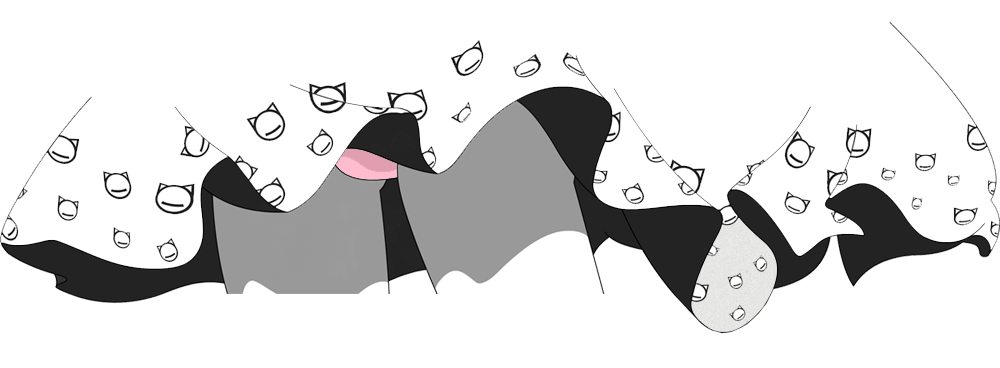

<div id="MainBox">
    <!--  -->
    <div id="bac-img"></div>
</div>

<style>
    #MainBox {
        width: 100%;
        height: 100%;
        text-align: center;
    }
    /* #MainBox img {
        size: 100%;
        margin: 0px auto;
    } */
    
    #bac-img {
        background-image: url(./res/qun.png);
        width: 1000px;
        height: 368px;
        margin: 0 auto;
    }
</style>

<script src="/static/main_script/content.js"></script>
<script>
    loadStyleFile("/static/pc-page/module/public/init.css");
</script>
<script src="/static/init-runner.js"></script>